Get Involved
Build a Web Thing

Build your own IoT device which uses the Web Thing API
Create an Adapter
Create an adapter add-on to bridge an existing IoT device to the web
Hack on Project Things
Help us develop our Web of Things implementation